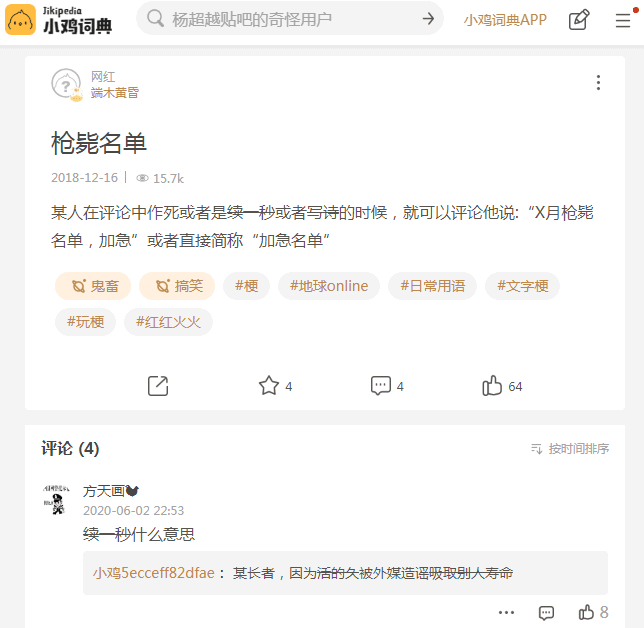
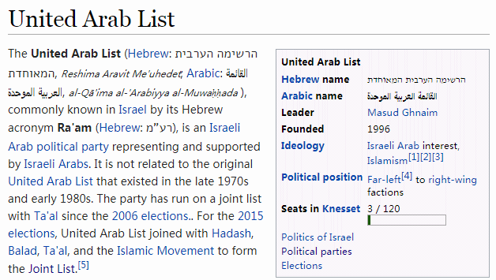
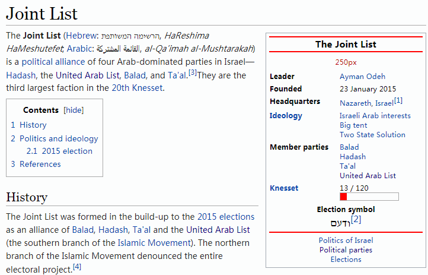
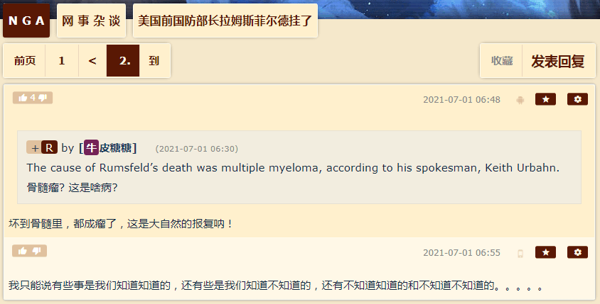
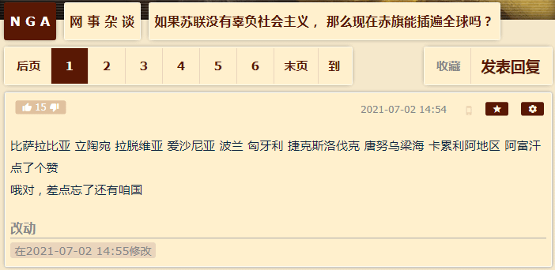
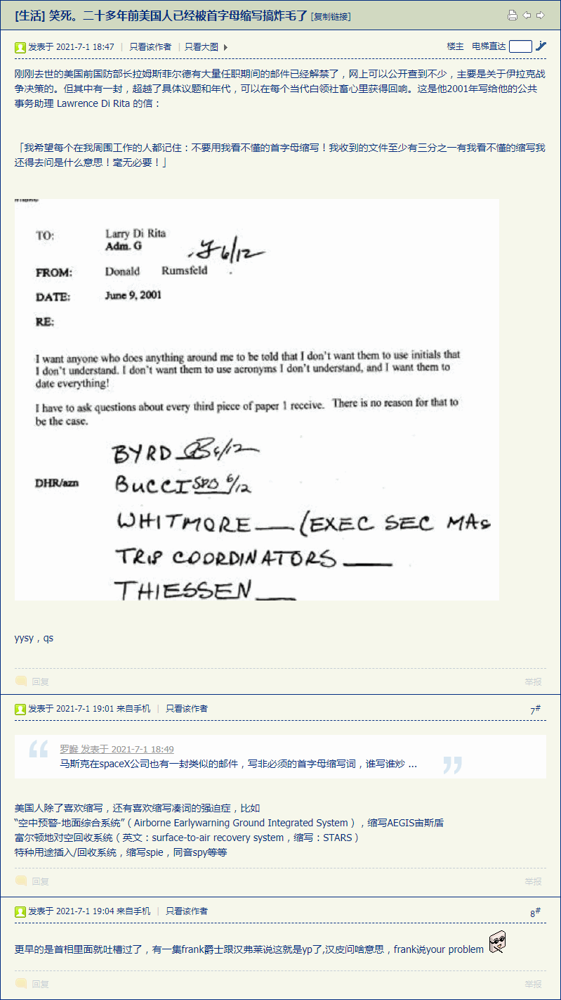
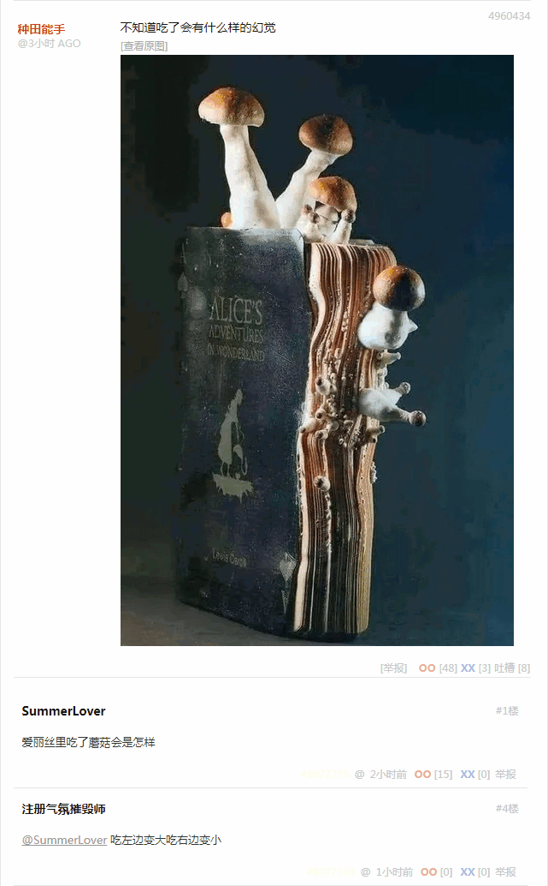
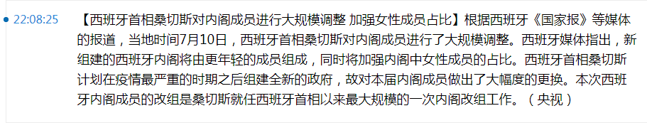

“到底有几份名单①吖？”问。
“那就得看英国人②怎么报道了”，回答。
“英国人？”插嘴，“最近正忙着炒作《天方夜谭》呢。”
“法国也一样”，补充，“到处流行中东要素，埃及了波斯了，掀起一阵一阵热潮。”
“为啥？”傻呵呵的问。
“你们不觉得”，加入对话，“《塔纳赫》只把迦南地许给了希伯来人，有些太保守了么？”
“长多大脚穿多大鞋”，解释，“那时候希伯来人跑路之前只能先定个小目标，雄心壮志太夸张了会吓跑追随者。”
“直说野心就行了”，嘲笑，“后来呢，又惦记上了叙利亚甚至两河，只不过没有‘自古以来’的借口了。”
“话说得太满也不好”，讽刺，“所以嘛，换层皮打个补丁，把全世界都许给了阿拉伯人。”
“知之为知之不知为不知是知也③”，对和说，“汝今能知乎？”
“第一次参加假面沙龙的感想如何？”男人问女人。
“咱们就是两根棒槌”，女人抱怨，“就像分配的面具一样。”
“有些话题，虽然憋在肚子里难受，但是在黎塞留阁下的眼皮底下说，还是要三思而后行的”，男人解释，“初来乍到，先当一阵子棒槌吧。”
“主持人水平挺高，有些参与者水平不错”，女人回忆，“我看有人比咱们还蠢。”
“那是负责活跃气氛的托儿”，男人解释，“或曰捧哏的。”
“你们觉得”，拿出三份报纸，法制日报、法制晚报、法制周报，“这些装饰性的题图有什么不同？”
「马、呀忒」「马、啊忒」「马、忒」
“看上去像是一个东西”，凑过来看了一眼，“应该是当年埃及的中央政法委书记吧？”
“好像没进中央”，质疑，“赫尔莫波利斯、赫利奥波利斯、孟菲斯和底比斯，都没有她的位置。”
“甚至阴间都没有，阳间更没戏”，补充，“那时候，不仅神殿大于法，王宫也大于法。”
“这个怎么念吖？”问。
“看转写的字母”，谨慎的回答，“好像话说一半就要停下来打个饱嗝的样子。”
“没那么夸张”，插嘴，“具体到这个词，你们就当哑音h
后面接个嘘音h
好了，只要不连着念就行。”
“高，实在是高”，竖起大拇指，“色目人的嗓子眼果然名不虚传。”
“他们是漢人”，纠正。
“看那些不发音的符号，似乎表示了这个名词的定性”，说，“分别是人、神、禽兽。”
“竟有这样的事？”睁大眼睛，略微昂起头，在灯光的照射下，面具亮晶晶的，“不过这蛇……既不是飞禽也不是走兽，只不过是一条爬～虫而已嘛”。
“就是这条爬虫”，冷冷的说，“撺掇夏娃向亚当吹枕边风。”
“好歹允许咱们说话了”，女人想起分配的面具，“之前别人都爱搭不理的样子。”
“本来假面沙龙就是熟人茶馆”，男人提醒，“陌生人与狗不得入内。”
“捧哏的也换了一个，比之前活跃得多”，女人回忆，“不过总是话说一半的样子。”
“不然就真的说起相声来了”，男人解释，“这个角色的岗位职责就是避免冷场，别人接口之后就要闭嘴。”
“确实有专业素质”，女人想起戴着鳄鱼面具的托儿姿态夸张抑扬顿挫念出“爬～虫”的样子，忍不住噗哧一声乐出来了，“还有职业道德。”
“蛇……”男人没跟着乐，“据说本来也是长着四条腿的。”
“试看将来的寰宇，必是赤旗的世界④”，拿出一张传单，“各位怎么看？”
“血脖子红胡子？”问。
“嘘……听！”将食指立在唇边示意。
“那是说罗马吧？”搭茬，“旗子竖着挂，见面高举右手敬礼。”
“没翻过中土去，倒是绕过去了”，说，“不过又吐出来了，现在勉强算剩下一半吧。”
“我给大家讲个笑话吧”，插嘴，“说当年马其顿刚打下中土的时候，在撒玛利亚插播了一届奥林匹斯山祭司委员会庆典。”
“为啥不是耶路撒冷？”问。
“听着！”不耐烦的对说。
“当时亚历山大陛下在开幕式上致辞，拿着演讲稿上台”，接着讲，“眼神锐利的环视四周，然后严肃的大吼：欧～米克龙！欧～米克龙！欧～米克龙！”
“为啥不是俄梅戛？”问。
“哦，这位女士还精通希腊语”，没等回答，旁边的就称赞一句。
“夫發發發”，小声笑出来了。
“亚里士多德赶紧提醒”，甩包袱，“陛下！那是三大洲的标志！”
“蛙蛤蛤蛤”，众人手抚后脑勺大笑，左手抚后脑勺，右手抓起的左手按在其后脑勺上来回晃动。
“为啥不是俄梅戛？”又问。
“那时候世界的形状还不是俄梅戛”，还是没等回答，旁边的就接口回答。
“世界是平的还是圆的？”追问。
“犹太人是亚当的后代还是夏娃的后代？”反问，“西缅人呢？”
“这么说吧，这个事情很复杂”，不说话不行了，开始扯淡，“现在的观测结果，与历史上的记载对比，有的能对上，有的根本驴唇不对马嘴。咱们呢，编了一堆公式解释，越绕越迷糊。然后呢，总结出个方程来，还得先证明存在唯一稳定性。有的方程呢，长得奇形怪状有碍观瞻，咋证都证不出来，只能数值计算。接下来呢，算个大概齐还没完，还得证收敛性。证出来也就罢了，证不出来嘛……”
“你在说啥？”问，“我听不懂。”
“听不懂就闭嘴！”发火了。
“没什么自由意志，中央已经钦定了”，赶紧救场，“虽然都这么说，但是你们真的觉得，那个谁……谁来着？”
“雅威”，提醒。
“安拉”，提醒。
“……反正就是祂老人家”，见有人搭茬，就顺势接口就坡下驴，“真的高瞻远瞩算无遗策运筹帷幄决策千里，多少年之后仍然事无巨细一切尽在掌握中？”
“耶少爷到底是雅威祂老人家的儿子，还是安拉祂老人家的儿子？”的心情似乎没有受到影响，好奇心还是那么充沛，“回到天堂之后，接班了吗？”
“耶少爷真的回到天堂了吗？或者说回到天堂接班的那位，真的是耶少爷吗？”气极反笑，顺着话头反问，“如果世界各地的神棍都没撒谎的话，那么耶少爷至少出生过三次，换过六口牙，还长着七十二根鸡巴。”
“你竟敢凶我？”女人气势汹汹的问男人，“刚才给你面子不计较罢了。”
“你一点眼力价都没有”，男人还嘴，“我还特意提醒你几次，还给你打圆场，你都不知道收敛。”
“有什么好收敛的？”女人狡辩，“这次的面具也是鳄鱼，很明显是让咱俩配合那个托儿逗哏。”
“你想多了”，男人嘲笑，“故意画得像王八，还特意伸出四条腿，那是在警告咱们‘四肢健全的大好生活来之不易’，要懂得珍惜。”
“是你想太多了”，女人反驳，“没我插嘴，话题还不至于如此热闹，你最后不是也甩了个包袱引发哄堂大笑吗？沙龙内外充满了快活的空气。”
“你没看见”，男人解释，“有个家伙明显是安排好今天亮相的，始终没出场，那就是因为预定的台词让你搅和了……你都听不出来俩帮闲跟你说话的口气。”
“什么台词？”女人回忆，“我就说了‘俄梅戛’吖，那才是长音，‘欧米克龙’毕竟短小，名字就这么起的。”
“按照这种场合的惯例，段子后面肯定还有神转折骚操作，吟游诗人最喜欢炒作文曲星急中生智救场如救火的精彩表演”，男人说，“语惊四座的家伙应该念两句诗‘会当凌绝顶，一览三洲小’，然后帮闲带头叫好，周边掌声一片。”
“帮闲？”女人想起来了，“就那俩神棍？”
“估计是包衣，从魔都带过来的精兵”，男人说，“有面具挡着，看不见耳垂上是否穿了洞套个环。”
“我没注意到”，女人无话可说就耍赖，“下次你提前跟我说。”
“现在我提前跟你说”，男人对女人说，“下次你就别跟着我了，找那帮女伴一起唠嗑，我看她们各个都比你人缘好情商高识大体顾大局懂政治讲规矩守纪律。”
“男人看了会沉默，女人看了会流泪”，拿出三份报纸，“今天三份报纸在首页今日头条位置醒目应景推荐的都是同一个标题。”
“但是副标题各不相同”，接过来扫了一眼，把两份递给旁人，“论住宅问题⸺深入揭批蒲鲁东先生的歪理邪说。”
“蛋碎一地⸺哟，副标题还有小标题”，看着自己手里这份，“⸺蛋壳公寓暴雷亲历记”。
“不甘心躺平认命子承父业的木匠之子如何在马扎尔传统风俗习惯的固有缺陷或曰鞑子的劣根性影响下一步一步走上犯罪的道路”，看着自己手里这份，“好长的标题吖。”
“那么男人和女人就各谈各的吧，你们手里的两份，好像说得是同一个事情”，说，“我们不想看着你们沉默的面具，泪流满面。”
“总有一种力量让你们泪流满面……具”，摊手耸肩，“祝你们永远年轻，永远热泪盈眶。”
“先说点别的吧”，随着男人们走到沙龙一侧坐下，又拿出一张传单，“这位女士，最近频繁出场。”
“不如说这位女士从来不曾退场”，纠正，“科普特人终于认怂服软之后，环地中海地区还一直流传着她的崇拜者，血食二百年乃绝。”
“现在伴随着埃及热，又被从故纸堆里翻出来了”，补充，“当然已经不是那时候的本来面貌了。”
“`Ast^
应该是‘阿塞特’才对吧？”看着传单上古色古香的形象配合与时俱进的拉丁字母，有些违和，“不过历史渊源应该尊敬，现实演变也需要重视嘛。”
“他们英国人最喜欢玩文字游戏碰瓷，最近伦敦还有个蹭热点的移民社区打出这位女士的旗号”，分享旅行见闻，“伊拉克与叙利亚的伊斯兰国”⑤
“是阿拉米人么？”问，“一国两制，高度自治，国中之国，米利特制度”。
“不”，回答，“日常讲阿拉伯语的犹太人。”
“谈崩了”，敏锐的发现了其中蕴涵的充沛政治和意识形态内容以及引领的激烈政治和意识形态斗争新动向，“要是没猜错的话，现在土耳其人正在隔壁帝国到处拉关系套近乎企图建立全面战略协作伙伴关系呢。”
“先说点别的吧”，带着女人们走到沙龙另一侧坐下，也拿出一张传单，“这位男士，最近频繁出场。”
“好雄伟啊”，第一眼就盯着`mnw^
的胯下，然后用扇子挡着嘴，“哦呵呵呵……”
“你们呀，就是小报看多了”，评价，“都以为八吋才是男人的标准配置。”
“哦呵呵呵……”女人们用扇子挡着嘴，沙龙之半壁江山充满了快活的空气。
“这位男士想必是大孝子”，展开伦理学话题，“既把娘亲的岗位继承下来，也没忘了爹。”
“那是因为仕途不畅，只能打理家业”，有不同意见，“祂的兄弟荷鲁斯就比祂有出息得多。”
“神比神气死神吖”，叹了口气，“再看隔壁老`ra^
家小ra，`Sw^
`tfnt^
兄妹两人都进了常委，左膀右臂风雨无阻。”
“要不是别人拦着，估计老`ra^
能把孩子都扯上主席台”，口气阴损，“好一个皇族内阁。”
“就算实在烂泥糊不上墙，扯不上去的还能委以重任，开设猎头公司专门捕奴抓壮丁”，帮腔，“不就是炮制冤假错案么？不就是篡改档案么？有什么难的？我上我也行。”
“可别这么说，专业的事情还得让它们专业人才负责”，提醒小伙伴们注意语气，“都说富歇先生才是法兰西第一聪明人。”
“比布封阁下还聪明？”问。
“当然”，回答，“比拉普拉斯先生还聪明。”
“那么谁是法兰西第一蠢人呢？”追问。
“我想”，仔细考虑了一下回答，“应该是炼金术士拉瓦锡先生吧。
“这个护身符最近也开始流行了”，掏出一串手链放在桌上，“基本上逮着的色目混混鸡鸣狗盗之徒人手一个。”
“管用么？”离得远看不清`tyet^
图案，就拿过来看了一眼，“戴上了还能被逮捕，想必是不管用吧？”
“就像十字架一样”，评价，“差不多也是人手一个吧？该咋样还咋样。”
“既然是埃及的东西”，把手链放回桌上，“信这套的应该是漢族混混鸡鸣狗盗之徒才对吧？”
“习惯了”，摊手耸肩，“反正这帮过江龙跟着土耳其人过来的时候，地头蛇没发现它们之间有什么区别。”
“还可能是華族混混鸡鸣狗盗之徒”⑥，补充，“最近它们也流行复古，又开始念合拗音了。”
“想也知道它们之间也有内讧，但是总能看出帮派之间的区别吧？”问，“不然就成英国没品法制笑话了，苏格兰场去牛津约谈数学讲师的时候，目标谈笑风生‘你们要抓的是鲁多维古斯・卡洛鲁斯，与我查尔斯・路特维奇・道奇森有什么关系？’”⑦
“你属什么？”反问，“我是说生肖。”
“应该是……马吧？”掰着手指头数了一下，“还真不习惯这套纪年规矩和进制纪律。”
“那你是什么星座呢？”也问，“这个总能记住吧？”
“天蝎座”，回答得很痛快，“怎么了？”
“恭喜恭喜”，抱拳拱手，“你已经是煎蛋盗贼公会的预备党员了。”⑧
“啥？”没搞清楚情况，“发生什么事情了？”
“你必是你爹小妾的丫鬟生的，哪怕不是也要抱给丫鬟养”，打趣，“左邻右舍必称你为‘丫挺的’”。⑧
“你家老宅必成盗贼公会总部”，打趣，“你爹必派遣色目混混鸡鸣狗盗之徒以十五人为单位组成敌后武工队，持公务护照从外交免检通道大摇大摆入境为非作歹。”⑧
“你必被色目情报掮客喷为‘黑鬼’”，补充，“哪怕长了一身白皮比身边人都白，哪怕从小到大只有人夸你长得白没人嫌你长得黑。”⑧
“我想起来了”，回忆小学《思想品德》课本，“以色列本来是个人名！”
“这个通行证或墓铭志最近也开始流行了”，掏出一块铭牌放在桌子上，“市面上出售的台面上的摆设，或者镶了这块匾，或者直接刻上字。”
“垫脚石？”目光如炬很有眼力价，隔着老远就能看到铭牌上的`bS^
图案很简单，“有什么意义？”
“埃及拼音的人名，或者说神名”，解释，“那个矩形其实是花园水池。”
“谁吖？”，问，“哪儿都能见着祂，神通广大？”
“恰恰相反”，说，“只是个爱管闲事到处跑腿的碎催散神，偏偏腿脚还有残疾。”
“就像吟游诗人说的那样”，问，“谁谁一掐诀念咒，拘得土地爷团团转，忙不迭前来见礼？”
“土地爷也是有编制的公务员，平时也是要打卡上班的”，质疑，“就因为社会上的联系脱岗办私事，怎么想也是有把柄被抓住了。”
“谁没个七大姑八大姨？”有不同意见，“哪怕是亲戚朋友街坊邻居拜托，顺手能办的事当然要顺手卖个人情嘛。”
“所以说这位是散神嘛”，提供细节，“据称还是埃及前朝龙裔呢。”
“哦？难道腿脚是被打瘸的？”好奇，“也是，改朝换代还能留条命不错了，磕头谢恩吧你。”
“不是，祂们家人都这样”，补充背景知识，“偶尔生出个健康人来，还被怀疑为野种。”
“就是那个图坦卡蒙……他们家？”问，然后不好意思的解释，“我就知道这个名字，还是报纸上看来的。”
“就是他吖，我也是从报纸上看来的，咱们谁也没去过埃及吧？”化解尴尬，“那时候他还叫图坦哈吞。”
“十九岁就崩了，可惜”，顺势感慨一句，“还没来得及大展宏图。”
“登基的时候才十一岁，砥砺奋进八年半就开了个倒车”，摇头，“跟爹对着干，不孝顺。”
“父在，观其志；父没，观其行；三年无改于父之道，可谓孝矣”，引经据典，“他登基三年之后才开始反攻倒算⸺当时肯定叫‘拨乱反正’什么的⸺已经够孝顺了。”
“没准就是个傀儡，小孩子懂什么？”同意，“他又不是直接接班，前面还有个……斯蒙卡拉吧？只干了三年，再干下去是不是拨乱反正，也不好说。”
“这么说来，图坦……哈吞反而是硬撑着续了三年才改名？”问，“他的知名度比前面那个……谁来着高得多，反正我没记住。”
“法老何以不言即位？成法老意也。何成乎法老之意？法老将平国而反之图坦哈吞。曷为反之图坦哈吞？图坦哈吞幼而贵，斯蒙卡拉长而卑，其为尊卑也微，国人莫知。斯蒙卡拉长又贤，诸大夫扳斯蒙卡拉而立之。斯蒙卡拉于是焉而辞立，则未知图坦哈吞之将必得立也。且如图坦哈吞立，则恐诸大夫之不能相幼君也，故凡斯蒙卡拉之立为图坦哈吞立也。斯蒙卡拉长又贤，何以不宜立？立嫡以长不以贤，立子以贵不以长。图坦哈吞何以贵？母贵也。母贵则子何以贵？子以母贵，母以子贵。”翻开备忘录，开始念诵摘抄，“法老何以不言即位？成法老志也。焉成之？言君之不取为法老也。君之不取为法老，何也？将以让图坦哈吞也。让图坦哈吞正乎？曰：不正。《春秋》成人之美，不成人之恶。斯蒙卡拉不正而成之，何也？将以恶图坦哈吞也。其恶图坦哈吞，何也？斯蒙卡拉将让而图坦哈吞弒之，则图坦哈吞恶矣；图坦哈吞弒而斯蒙卡拉让，则斯蒙卡拉善矣。善则其不正焉，何也？《春秋》贵义而不贵惠，信道而不信邪。孝子扬父之美，不扬父之恶。先君之欲与图坦哈吞，非正也，邪也；虽然，既胜其邪心以与斯蒙卡拉矣。己探先君之邪志，而遂以与图坦哈吞，则是成父之恶也。兄弟，天伦也。为子受之父，为诸侯受之君。己废天伦，而忘君父，以行小惠，曰小道也。若斯蒙卡拉者，可谓轻千乘之国。蹈道，则未也。”
“怎么还有这么多大道理？”听着头疼，又不敢打断，等念完了之后才抱怨了一句，“什么‘法老意’‘法老志’，平反不平反的……”
“家务事哪儿来的自由意志？”帮腔，“法语之言能无从乎？老爷子老太太一合计就齐活了。”
“可是埃及这事……那事，说法都不一样”，认真听完，发表感想，“到底是家务事决定公务事，还是公务事决定家务事，还不知道呢。”
“关咱们什么事？”不在乎，“茶余饭后就当个乐呵听了。”
“你们说”，忽然脑洞大开，指着桌上的铭牌，“这个跑腿的碎催散神，会不会就是图坦……卡蒙本人？”
“差不多得了”，一直沉默的忽然开口，面具上的‘圣蛋’亮晶晶的，“开玩笑要适可而止。”
“也是，再扯下去我就成捧哏的了”，表示同意，“作为协助你们指桑骂槐的帮闲。”
“这可不是开玩笑，娱乐至死の色目逗哔就是这么碰瓷的”，冷冷的说，“没有亲身经历，你们只当个乐呵听是吧？”
“愿闻其详”，的态度也不怎么友善，“没有亲身经历，我也不知道脸谱还有微言大义。”
“这么说吧，过江龙也有势力范围”，打圆场，“只不过不像地头蛇那样按照属地原则划分选区，而是按照属人原则分配猎场。”
“轮流坐庄？”的心态并没有因为这句解释而调整过来，“按年头狩猎，按月份割韭菜？”
“差不多”，补充，“众所周知，黄道十二宫共有十三个星座，以色列十二支派也曾经有十三块地皮。”
“当过埃及中堂就是不一样”，感慨，“不仅用小儿子以法莲顶了利未的位置，大儿子马拿希还能分家，东宫西宫各自圈地，逼得西缅只能寄人篱下。”
“一个被拐卖的奴隶，怎么就当上了埃及中堂了？”口气略有缓和。
“我有一个梦”，抑扬顿挫的念诵台词，“至于这个梦，是怎么做出来的，谁也不知道。”
“通灵术吗？”看着严肃的表情，听着怀疑的腔调，感觉有点不对劲，“一个被拐卖的奴隶，怎么就擅长解梦呢？”
“也许是梦魇，自导自演的装神弄鬼”，并没有“桑”的自知之明，得知自己是别人骂“槐”的借口，心里也不痛快，“或者直说是唯心主义敲诈勒索。”
“现在的研究结果”，直接说结论，“更有可能是催眠术，否则舌绽莲花也不至于‘朝在蹲班房，暮登天子堂’，还能获得‘一人之下万人之上’的待遇。”
“唯心主义也不至于指导农业生产建设，背后肯定有推手，甚至埃及中堂都未必是约瑟自己，更有可能是当时当地的贵种，被约瑟调教为前台的买办代理人”，补充，“只要自己人上了台，约瑟就能操盘，有内幕消息撑腰，高抛低吸贱买贵卖，想穷也难。”
“七个丰年……粮食不知道便宜成啥样了”，终于好受点了，“如果真如同文本记载的那样‘贯朽粟腐’，市场上出现‘负粮价’也不是不可能。”
“到了七个荒年……”只说了半句，与众人对视一眼，各自心领神会。
“这招现在还在用”，提醒众人，“没有保护伞的孤魂野鬼，才会以‘操纵市场’罪名塞入巴士底狱。”
“古典文献整理出来的越来越多了”，提供学术情报，“当年这帮人的培训教材都公开出版了。”
“什么吖？”问，“我没听说过。”
“不是单独成册，本来也没署名，夹带在其它知名中堂领衔编纂的划时代大作当中”，回答，“就是《管子》当中的‘轻重’各篇。”
“这个听说过”，说，“不过没注意到‘治国理政新实践’当中还有耍钱の奥义。”
“红顶黄马褂玩那一套就不叫‘耍钱’了”，口气轻蔑，“钱，或者说赎罪券，就是他们印出来的。”
“当时埃及的主食是鹰嘴豆吧？”忽然想起这条豆知識，“大米白面吃不起，或者以‘未经中央批准擅自食用大米白面罪’定性为‘经济犯’”。
“主、食”，一字一顿的重复，“也是碰瓷要素。”
“愿闻其详”，这次轮到虚心求教了。
“平时吃饭之前的祈祷仪式没忘吧？虽然未必严格执行”，言简意赅，“眼瞅着自己面朝黄土背朝天伺候大半年才从地里长出来的庄稼，也要说是神赐的，至于是哪个神，具体情况具体分析。”
“大海航行靠舵手，万物生长靠太阳”，念了两句诗，“功劳肯定是一把手的，`wsjr^
只是个分管农业的常務取締役，还不是其主要岗位职责。”
“主要食物和主子赏赐的食物吗？”搭话，“确实见过有人故意混淆的。”
“现在大米白面可以随便吃了，通常酒客下馆子就只吃点小菜喝啤酒了”，口气阴损，“色目混混鸡鸣狗盗之徒看在眼里急在心里，隔三岔五假惺惺的善意提醒，‘你咋不吃点主食呢’？”
“这怎么能算碰瓷？”理解不能，“本来也没说错嘛。”
“如果你知道英国人刚捧起来俩大亨，就不这么想了”，提供商业情报，“一个姓米，一个姓麦。”
“那又怎样？”反问，“碍着咱们吃大米白面了？”
“当然不”，还是直接说结论，“只不过关系到你会被哪个支派的捕奴队抓壮丁。”
“差不多得了”，打断，“人贩子哪儿有什么养育之恩？”
“唔”，立刻知趣的闭嘴。
“嗯？”立刻警惕起来，“采生折割？”
“应该不是说图坦卡蒙吧？”质疑，“应该是拐来之后从小培养的工具人。”
“就像吟游诗人说的那样”，补充，“啥‘家里也是为你好’了，‘世上只有妈妈好’了……什么的。”
“确切的说”，下结论，“养育孩子，是人贩子的工作。”
“嗤，难道还有五险一金？”嘲笑，“干不动了还能找个山清水秀的地方安度晚年？”
“那要看是不是有官府撑腰了，当年英国人大搞特搞大三角贸易的时候，白金汉宫颁发贩奴执照可勤快了”，接茬，“如果鹰犬爪牙为了坚决贯彻落实中央钦定的大目标而布局良久准备下一盘大棋，委托江湖好汉草莽豪杰拐来的孩子不是黑皮而是白皮，扔人堆里找不着那种……”
“打住吧”，示意众人收敛，歪头指向对面，“那边的男人们差不多也聊够了。”
“好像又吵起来了？”顺势看了一眼沙龙的另外半边天，“咱们就这么坐着干等？”
“玩个游戏吧”，拿出一摞纸牌，递给，“你来当代练。”
“这是啥？”接过来摊开，牌面上是一堆似乎有什么规律的符号，还有莫名其妙的文言文，“新式扑克？变种塔罗？”
“差不多，就当抽签了”，也不过多解释，“看来有其它神棍大忽悠，在中央大力推行腾笼换鸟政策获取生存空间之际，忙不迭要填充吉普赛人的生态位。”
“游戏代练是什么意思？”手上熟练的洗牌，看着问。
“这帮神棍大忽悠，强调‘我命由我不由兲，顺则凡，逆则仙’什么的”，解释，“那么它们的命运，就由乌尔德、薇儿丹蒂、诗蔻蒂找别人代劳了。”
“唔，算得不是自己的命？”看已经洗好牌，“然后呢？”
“你想算谁的命？”问，犹豫了一下，没回答。
“当然是万寿无疆的路易陛下他老人家……还有永远健康的黎塞留阁下他老人家”，看转头看着自己，就人缘好情商高的作出了识大体顾大局懂政治讲规矩守纪律的回答。
“四平八稳”，评价，示意抽一张，“看呐这卦”。
“四上四中四下，众凶卦：纯阴同见，坤地西南？”看到抽牌后看了一眼，一言不发把牌面向上摊在桌子上，好奇的伸头看了一眼，“泰极之象：凶祸暴至，凡事不利，疾病系官，动有颠踬。”
“此课三位皆穷阴，众凶俱发，所为皆阻，待毙而巳”，念着牌面措辞，摇头叹息，“真不吉利吖。”
“百尺竿头路巳穷，寻思无计转飘蓬”，念了两句诗，又念了两句诗，“只知钓上鲈鱼白，不觉翻身入浪中。”
众人无语，沉默片刻看到男人们已经站起身来，看来要散会了，就各自收拾细软准备打道回府。
“喵喵”，把纸牌还给的时候，低声打招呼。
“表现不错⑨”，低声、慈祥的称赞。
（完）
-
①    ② - ③
- ⑤
 - ⑤
- ⑥
- ⑦
 - ⑧ “蛋必作道上的蛇，路中的虺，咬伤马蹄，使骑马的向后坠落。”⸺《创世纪》49:17
蛋是雅各的第五个儿子，为拉结的使女辟拉所生，意思为伸冤。属于蛋支派的最著名的人物就是参孙。今天，在昔日蛋支派的土地上，即现代以色列西部沿海的中段，形成了以特拉维夫为中心的大都市区，称为古什・丹都市区。埃塞俄比亚犹太人相信是源于蛋族。
- ⑨